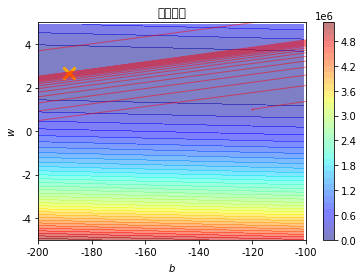

线性回归
线性回顾是最近基本的机器学习模型，它包含了机器最基本的思想。
- 确定学习模型和损失函数，初始化参数
- 损失函数的各个变量的梯度，根据学习步长产生新的变量
- 迭代步骤2，直到损失函数值不在缩小或者达到预定的迭代次数时， 退出循环，损失函数最小时，就是当前学习到的最优模型
准备实验数据
%matplotlib inline
import matplotlib.pyplot as plt
import numpy as np
plt.rcParams['font.sans-serif'] = ['SimHei'] # 指定默认字体
plt.rcParams['axes.unicode_minus'] = False # 解决保存图像是负号'-'显示为方块的问题
# Out[10]:
x_data = [338., 333., 328., 207., 226., 25., 179., 60., 208., 606.]
y_data = [640., 633., 619., 393., 428., 27., 193., 66., 226., 1591.]
x_d = np.asarray(x_data)
y_d = np.asarray(y_data)
初始化模型
import time
x = np.arange(-200, -100, 1)
y = np.arange(-5, 5, 0.1)
Z = np.zeros((len(x), len(y)))
X, Y = np.meshgrid(x, y)
# loss
for i in range(len(x)):
for j in range(len(y)):
b = x[i]
w = y[j]
Z[j][i] = 0 # meshgrid吐出结果：y为行，x为列
for n in range(len(x_data)):
Z[j][i] += (y_data[n] - b - w * x_data[n]) ** 2
Z[j][i] /= len(x_data)
# linear regression
b = -120
w = 1.0
# 先人工利用先验知识 设置参数b, w的不同学习步长
lr = 0.00005
lrb = 1.0
iteration = 14000
训练迭代
b_history = [b]
w_history = [w]
loss_history = []
start = time.time()
for i in range(iteration):
m = float(len(x_d))
y_hat = w * x_d + b
loss = np.dot(y_d - y_hat, y_d - y_hat) / m
grad_b = -1.0 * np.sum(y_d - y_hat) / m
grad_w = -1.0 * np.dot(y_d - y_hat, x_d) / m
# update param
b -= lrb * grad_b
w -= lr * grad_w
b_history.append(b)
w_history.append(w)
loss_history.append(loss)
if i % 1000 == 0:
print("Step %i, w: %0.4f, b: %.4f, Loss: %.4f" % (i, w, b, loss))
end = time.time()
print("大约需要时间：", end - start)
绘制学习曲线
# plot the figure
cp = plt.contourf(x, y, Z, 50, alpha=0.5, cmap=plt.get_cmap('jet')) # 填充等高线
plt.plot([-188.4], [2.67], 'x', ms=12, mew=3, color="orange")
plt.plot(b_history, w_history, 'o-', ms=1, lw=1, alpha=0.5, color='red')
plt.xlim(-200, -100)
plt.ylim(-5, 5)
plt.xlabel(r'$b$')
plt.ylabel(r'$w$')
plt.title("线性回归")
plt.colorbar(cp)
plt.show()
